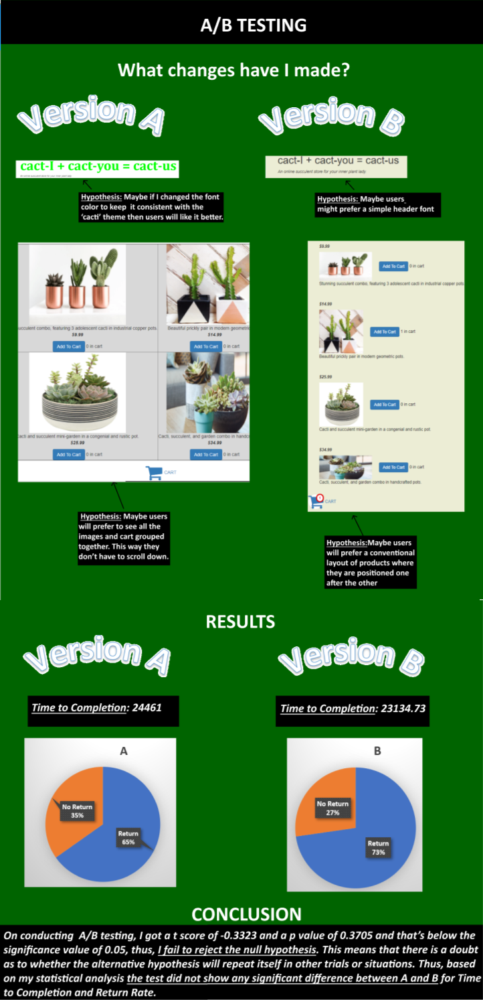

Infographic

I have chosen the gatesnfences.com website. This is a site for users to buy different types of gates and/or fences for their needs. This site has a large range of items available, however, there are some critical issues with the website design and my aim is to redesign the website fixing those issues.
Part 1: Identifying Usability Problems
I have conducted accessibility-checking using the WAVE service tool
As we can see from the summary image, there are many problems associated with this site. From this result, I have chosen to focus on the the Contrast Errors.
Additionally, there are a few other problems that I can see with the design layout of the website and the website content.